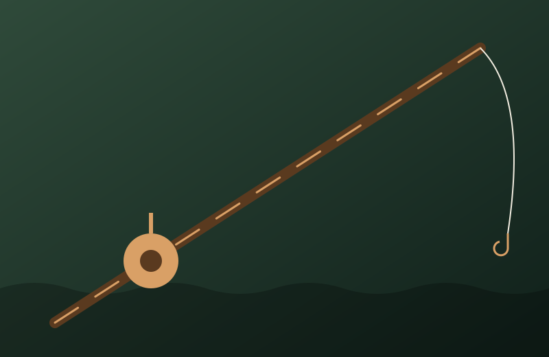
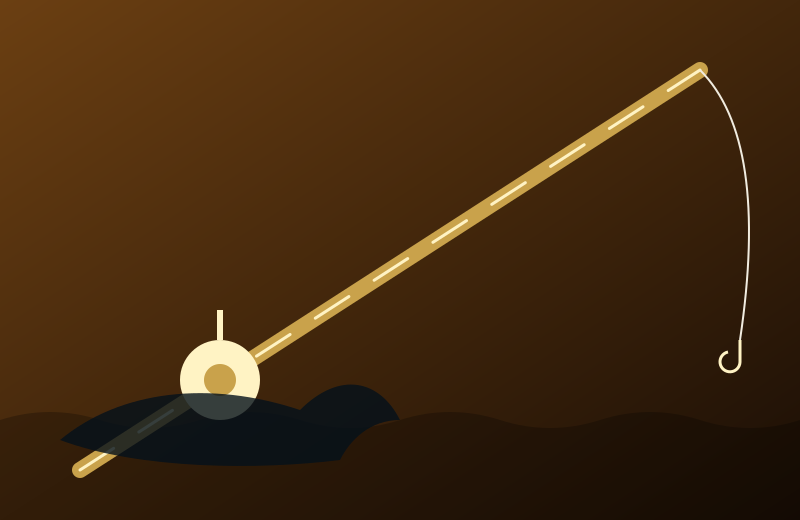

Mes réalisations
Trois cannes, trois serments faits à l'eau.

La Sylve — canne en bois
Taillée dans un frêne centenaire tombé un soir d'orage, la Sylve garde en elle le murmure de la forêt. Son fil de soie glisse comme une brume sur l'étang. Elle ne demande qu'une chose : que vous preniez le temps.

L'Aurore — canne en or
Forgée en or pur dix-huit carats, l'Aurore capture la première lueur du jour et la rend aux vagues. Rien ne lui résiste, pas même le colosse qui rôde sous la houle : elle est faite pour affronter les géants, avec élégance.
L'Éternelle — canne en diamant
Mille éclats, un seul geste. L'Éternelle est sertie de diamants taillés à la main, chacun gardant une étoile prisonnière. Pensée pour la pêche à la baleine, elle plie sans jamais rompre — comme les promesses qui durent.